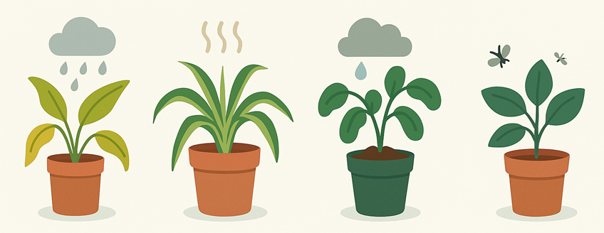

Common Plant Problems and How to Fix Them

🌿 Yellow Leaves
Yellowing leaves are one of the most common issues new plant owners face. In most cases, it’s a sign of overwatering. When roots sit in wet soil for too long, they can’t absorb oxygen, and the plant starts to decline. Stick your finger about an inch into the soil—if it feels soggy, hold off on watering. Always make sure your pot has drainage holes.
🌿 Browning Leaf Tips
Crispy brown tips can be caused by dry air, too much fertilizer, or inconsistent watering. This happens often in winter when heaters dry out the air. Try misting the leaves regularly or placing a small humidifier nearby. If you’ve recently added fertilizer, consider flushing the soil with clean water to remove any buildup.
🌿 Wilting
A wilted plant may look thirsty but don’t rush to water! Wilting can actually mean overwatering, too. Feel the soil: if it’s dry, water thoroughly. If it’s wet, hold off and let the plant dry out before watering again. Make sure your pot isn’t holding excess water at the bottom.
🌿 Dropping Leaves
When plants suddenly lose leaves, it’s often a sign of stress. Common causes include moving the plant, changes in lighting, cold drafts, or temperature swings. Try to keep your plant in a stable environment. If you recently repotted it or changed its location, give it some time to adjust.
🌿 Gnats or Bugs
Fungus gnats love moist soil. If you see tiny flies near your plant, let the top inch of soil dry out between waterings. Use yellow sticky traps to catch adult gnats, and consider adding a thin layer of sand or cinnamon on top of the soil to deter eggs. Neem oil spray is a safe and natural option for most houseplant pests. Just be sure to test on a small section first.